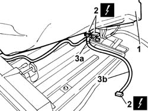

7050N15 REAR SEAT BACK CABLE HARNESS - R.R. WITH BACK REMOVED
- Path
- Procedures > 70 FITTINGS > 7050 REAR SEATS > 7050N COMFORT REAR SEAT FUNCTIONS > 7050N15 REAR SEAT BACK CABLE HARNESS - R.R. WITH BACK REMOVED
- Kind
- repair procedure (removal / refitting; the operation number is the code)
- Applies to
- all engines; all production periods
- Interactive page
- https://sloeber94.github.io/elrnDB-lThss/en/#/841003034
Applies to: all engines; all production periods
 Removing
Removing
 Refitting
RefittingOp. 7050A78 SKI FLAP IN REAR SEAT SQUAB RR
Op. 7050D31 REAR SEAT BACKREST COVER - R.R. WITH BACKREST REMOVED
1. Lift up the rear backrest upholstery.
2. Disconnect the electrical connections for the backrest heater pad, the coupling with the cushion and the armrest.
Description | Connector | |
|---|---|---|
2 | Rear armrest backrest coupling | D134 |
Description | Connector | |
|---|---|---|
2 | Left rear backrest cushion coupling | D130 |
Description | Connector | |
|---|---|---|
2 | Right rear backrest cushion coupling | D131 |
Description | Connector | |
|---|---|---|
2 | Left rear seat backrest heater pad | O044 |
Description | Connector | |
|---|---|---|
2 | Right rear seat backrest heater pad | O045 |
3. Open the fastening bands (3a) and remove the wiring (1b).

Applies to: all engines; all production periods
Refitting
RemovingFit the wiring and Secure it to the retaining bands.
Connect the electrical connections for the backrest heater pad, the coupling with the cushion and the armrest.
Description | Connector | |
|---|---|---|
- | Rear armrest backrest coupling | D134 |
Description | Connector | |
|---|---|---|
- | Left rear backrest cushion coupling | D130 |
Description | Connector | |
|---|---|---|
- | Right rear backrest cushion coupling | D131 |
Description | Connector | |
|---|---|---|
- | Left rear seat backrest heater pad | O044 |
Description | Connector | |
|---|---|---|
- | Right rear seat backrest heater pad | O045 |
Position the upholstery on the backrest.
Op. 7050D31 REAR SEAT BACKREST COVER - R.R. WITH BACKREST REMOVED